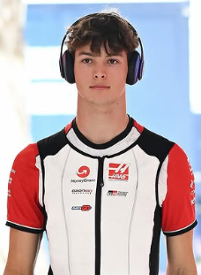

Oliver Bearman
Oliver Bearman
Team: Haas F1 Team
Team Principal: Ayao Komatsu
Number: 87
Nationality: United Kingdom
Debut: 2026
Born: 8 May 2005
History: British driver Oliver Bearman rapidly established himself as one of Formula 1’s brightest young prospects after rising through the Ferrari Driver Academy. Following standout substitute appearances that immediately impressed teams and fans alike, Bearman secured a full-time seat thanks to his maturity, adaptability, and natural speed. Known for his confidence under pressure and smooth driving style, he entered 2026 as a central part of Haas’ future ambitions and one of the most closely watched young drivers in the sport.
